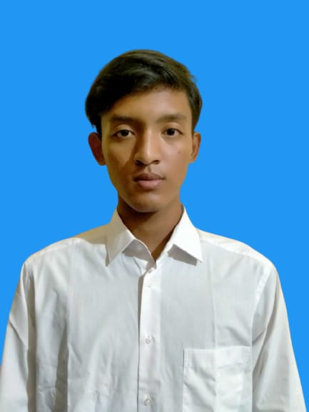

Assalamu’alaikum — Selamat Datang!
Laman ini adalah bagian dari akademik mahasiswa Institut Manajemen Indonesia, yang memberikan informasi akademik, jadwal, dan layanan lainnya. Semoga Anda selalu sukses dalam menempuh pendidikan di Ikami.
Tentang Saya
Saya adalah Mahasiswa dari salah satu universitas di Kuningan, yaitu Universitas Kuningan, Fakultas Ilmu Komputer, Program Studi Sistem Informasi angkatan 2025.
Memiliki ketertarikan di bidang komputer basis data dan analisis basis data. Saya sedang menempuh pendidikan S1 di Universitas Kuningan.
2025 – sekarang
Sarjana Sistem Informasi (S1)Universitas Kuningan
2022 – 2025Sekolah Menengah Atas (SMA)SMAN 1 Cigugur
2019 – 2022Sekolah Menengah PertamaMTSN 2 Sindangsari
2012 – 2019Sekolah DasarSDN 1 Ciporang
Akademik
Hubungi Saya
✉ Email20250910034@uniku.ac.id
☎ Telepon / WhatsApp085147728420
🕘 Jam KuliahSenin – Jumat
08.00 – 17.00 WIB
08.00 – 17.00 WIB
📍 AlamatPerumahan Kuningan City View
Blok A2 No 4
Blok A2 No 4